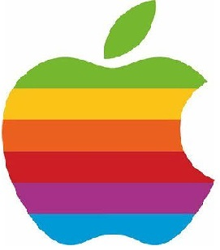

Résumé de la vie d'Alan Turing
lan Mathison Turing est un mathématicien, cryptologue, pionnier de l'informatique, de l'intelligence artificielle et de la morphogenèse en biologie. Né le 23 juin 1912 à Londres, il vit dans une famille aisée et développe rapidement une affinité pour les sciences ; à 16 ans, il comprend les recherches d'Einstein mais répète les échecs pour ses examens dû à son manque d’intérêt envers les disciplines classiques. Il intègre finalement le King's College de l'Université de Cambridge en 1931.

Cette université étant plus libre pensive, Turing développe plus facilement ses études sur les mathématiques et également son attirance pour les hommes. Diplômé deux ans plus tard, il lit les publications de Kurt Gödel et de Von Neumann sur le fondement des mathématiques ce qui résulta à l'obtention d'une bourse d'enseignant chercheur en 1935.
Alan arrête de courir sérieusement les marathons en 1950, à cause d'une blessure à la jambe. Il fût malheureusement arrêté pour « Indécence manifeste et perversion sexuelle » à cause de ces relations homosexuelles qui n'étaient pas cachées. Son confrère Hugh Alexander érige un brillant portrait de lui mais ne peux citer ses titres de guerre à cause du Secret Act. Alan Turing choisira alors la castration chimique car il ne pouvait se résoudre à abandonner ses projets en allant en prison.
Il mourra 2 ans plus tard, le 8 juin 1954, dans sa maison à Wilmslow, après avoir ingurgité une pomme imbibée de cyanure.
Pour finir, l'amnistie d'Alan Turing fut exprimée par le gouvernement britannique en septembre 2009. Nombreux sont ses hommages comme le prix Turing décerné annuellement par l' « Association for Computing Machinery », la récupération par le musée de Bletlchley Park par une vente aux enchères de ses œuvres écrites durant la Seconde Guerre Mondiale ainsi que sa figuration sur les futurs billets de 50£ de la Banque d'Angleterre.